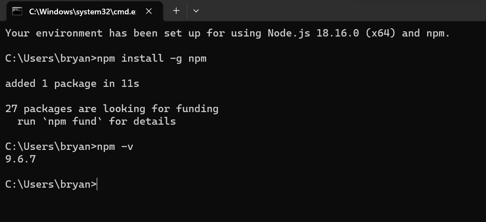

| Contenido | |
|---|---|
| Proposito del Software | Proceso de instalación |
| Video de Instalación (Auxiliar) | Evidencia de Instalación |
Es un administrador de paquetes para el tiempo de ejcusion de JavaScript Node.js, este consiste de una herrmienta CLI para publicacion y descarga de paquetes y un repositorio para paquetes JavaScript
Para instalar NPM, deberas:
En este video se explica el proceso de instalación de NPM
Esta es mi evidencia de Instalación
